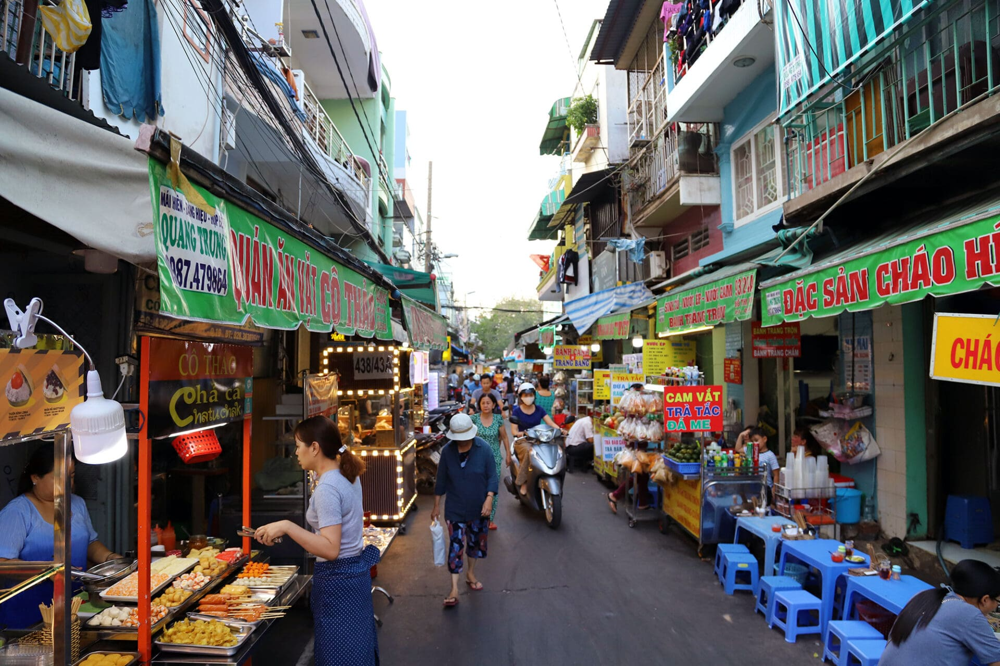

Giờ bán
Nhiều quán ngon chỉ bán vài tiếng. Đến đúng giờ giúp món còn nóng và đủ lựa chọn.
Một hành trình khám phá tinh tuyển về cảnh sắc ẩm thực sống động, rộn rã và đậm đà hương vị trên những góc phố nhộn nhịp của Thành phố Hồ Chí Minh.
Khám phá bộ sưu tập
Bánh Mì ThịtVị đắng mạnh mẽ của hạt Robusta được làm dịu lại bởi sự ngọt ngào của sữa đặc. Một nghi thức hàng ngày hòa quyện đắng và ngọt, tí tách nhỏ giọt qua chiếc phin kim loại.
"Ẩm thực đường phố không chỉ là món ăn nhanh, mà là ký ức sống động của một thành phố."
Nhiều quán ngon chỉ bán vài tiếng. Đến đúng giờ giúp món còn nóng và đủ lựa chọn.
Nồi nước dùng, bếp than và cách chuẩn bị rau nói nhiều về chất lượng quán.
Mỗi món có thứ tự cuốn, chấm, thêm rau hoặc thêm ớt riêng.
Gọi nhiều món nhỏ giúp thử được nhiều hương vị trong một buổi.